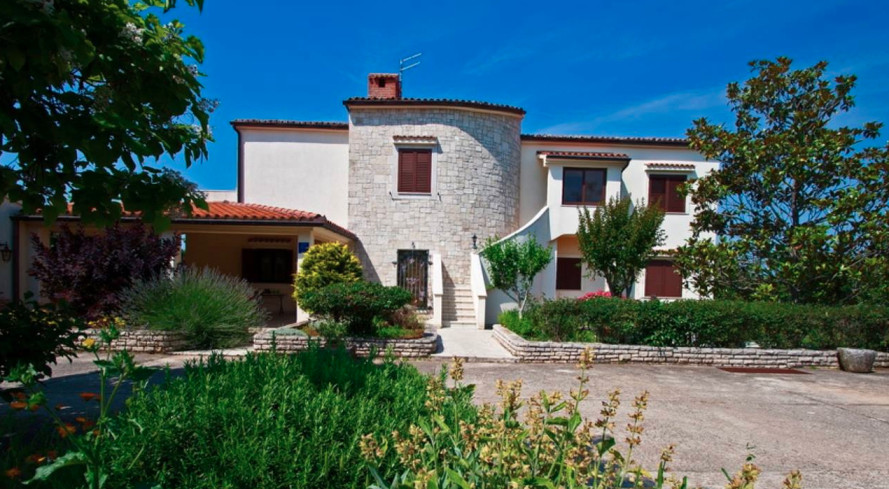
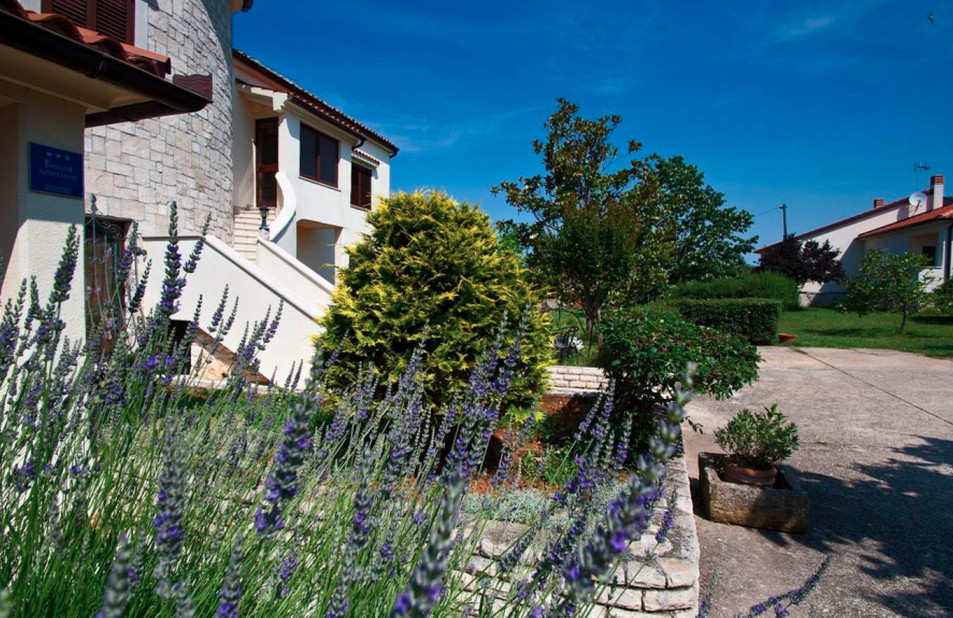

Pace, privacy e il mare vicino
Il bungalow si trova in una zona residenziale tranquilla di Pola, nota per l’atmosfera mediterranea, i pini e il mare limpido. Sembra più una piccola casa vacanza che un normale appartamento, con terrazza e giardino privati.

Posizione
L’Arena e il centro storico sono a pochi minuti in auto. La Marina Veruda, una delle principali marine dell’Istria meridionale, è vicina, e l’aeroporto di Pola dista circa 10 km, cioè una quindicina di minuti in auto.
Spiagge vicine
Il sud di Pola è noto per le calette rocciose e le piccole spiagge tra i pini. La spiaggia di Ambrela e le calette della penisola di Verudela sono a breve distanza in auto, con acqua limpida e ombra naturale.

Comfort
- Terrazza privata per la colazione o un aperitivo serale
- Piccolo giardino con zone d’ombra
- Parcheggio privato gratuito accanto alla proprietà
- Aria condizionata
- WiFi veloce gratuito
A chi è adatto
Coppie
Privacy e un ambiente tranquillo, lontano dagli hotel affollati.
Famiglie
Spazio all’aperto, un quartiere tranquillo e spiagge adatte ai bambini vicine.
Subacquei
Pola è nota per le immersioni e il bungalow è una base comoda.
Velisti e ospiti in barca
Vicino alla Marina Veruda, ideale se andate in barca a vela o noleggiate una barca.